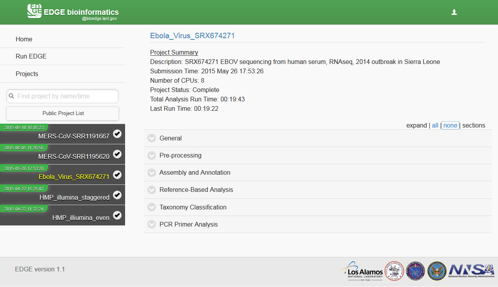

7. Output¶
The output directory structure contains ten major sub-directories when all modules are turned on. In addition to the main directories, EDGE will generate a final report in portable document file format (pdf), process log and error log file in the project main directory.
- AssayCheck
- AssemblyBasedAnalysis
- HostRemoval
- HTML_Report
- JBrowse
- QcReads
- ReadsBasedAnalysis
- ReferenceBasedAnalysis
- Reference
- SNP_Phylogeny
In the graphic user interface, EDGE generates an interactive output webpage which includes summary statistics and taxonomic information, etc. The easiest way to interact with the results is through the web interface. If a project run finished through the command line, user can open the report html file in the HTML_report subdirectory off-line. When a project run is finished, user can click on the project id from the menu and it will generate the interactive html report on the fly. User can browse the data structure by clicking the project link and visualize the result by JBrowse links, download the pdf files, etc.
7.1. Example Output¶
See http://lanl-bioinformatics.github.io/EDGE/example_output/report.html
Note
The example link is just an example of graphic output. The JBrowse and links are not accessible in the example links.